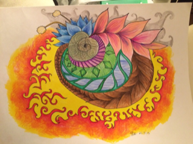
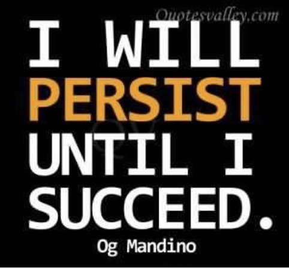
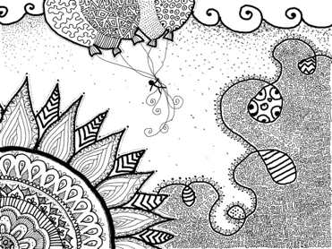

Our blogs are a window into our world, as we see it. Its a place where we freely express what interests us and we want it to be a change maker, our art is unique and one of a kind. We chose to express our ideas and views using music and art, two very central mediums for us in our communication with the world. Everything from high fashion to how to get across a threshold in a wheelchair, services at airports and different airlines, to cooking - you will find something that will interest you. Please let us know what you want to know more about and we will be happy to oblige as long as it falls without our company policy.
Hello everyone!! I have been working on this drawing sometime ago and now I'm finally done! Here it is!

What do you see in this drawing? I would absolutely LOVE to know what you see and what you think about it!! So please comment
Ramya
When I turned 16, I realized something. I realized something which made me change. It changed the way I looked at my life, and it changed they way I looked at my future. It made me change the way I chose to live from then on. So, what was this something? Well, it suddenly hit me, that I was going to be an adult in two years time, and it also hit me, that my future was completely unknown, and that it was I who has the power to make it into something great and wonderful! For a period of time, I was completely confused, overwhelmed, scared and felt like my whole life was a big mess. Then I saw this...

on Facebook! This one sentence changed everything. Then I KNEW what I needed to do with myself, and so I did. This sentence motivated me to do whatever I could do to make my own life better. Since then, I leave been living my life by this and because of that, I have achieved quite a few things to help me in the unknown future...
Hey, everyone!!
I haven't been able to draw for the longest time, because I had some infection in my nails, which meant they had to be removed several times (very painful I can assure you!). But finally, they've healed and I'm able to draw again!!
It makes me so happy, and it feels like meditation for me. It takes me to a completely different place, and I forget any pain (phantom pains in right hand). I don't really think when I draw. Whatever I feel at that moment is automatically expressed on the paper. It's like a diary!!
But as you know, my eyesight is getting worse, and it keeps getting harder. So I keep trying to find other ways to continue drawing. Earlier this year, got a new iPad, which is perfect for someone like me :) And then my aunt bought me the apple-pen which goes with it. The great thing is that I can zoom in on my drawing on the iPad, and do the details I never could on paper!! And....oh my.... I got carried away :)) and this happened!!

I really really enjoyed this :) and I am kinda proud of myself ;) hehe....
Please tell me what you think, I would love to know!! And also, if you have any thoughts about what the drawing means ;)
Take care!!
Ramya